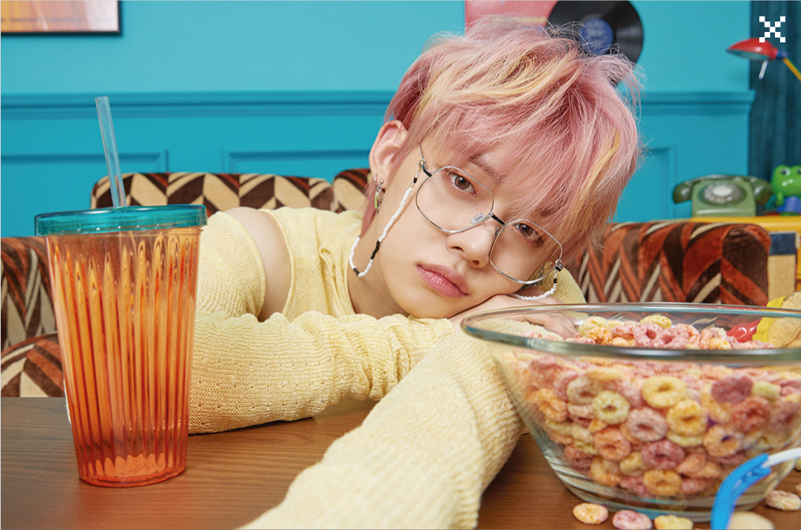

TXT es un grupo de surcoreano asociado a la empresa BigHit Entertainment, este grupo conformado por 5 chicos debuto el 04 de Marzo del 2019 en Corea del Sur y el 15 de Enero del 2020 en Japón.
¿Por qué "TOMORROW X TOGETHER"?: Los diferentes tú y yo juntos, con el mismo sueño de tener un futuro, lo que significa que se encontraron sin pistas y diferentes entre sí, pero tienen los mismos sueños y continúan alcanzándolo juntos.
INTEGRANTES
El grupo esta integrado por 5 chicos (4 coreanos y 1 estadounidense)
Soobin
Su posicion en el grupo es de Líder, Vocalista, Rapero y Bailarín
Ficha
Nombre completo: 최수빈 / Choi Soo Bin
Profesión: Cantante, Rapero, Bailarín, MC
Fecha de nacimiento: 05-Diciembre-2000
Lugar de nacimiento: Ansan, Corea del Sur.
Estatura: 185 cm.
Yeonjun

Es el mayor del grupo y su posicion es de Vocalista, Rapero y Bailarín
Ficha
Nombre completo: 최연준 / Choi Yeon Jun.
Profesión: Rapero, Cantante y Bailarín.
Fecha de nacimiento: 13-Septiembre-1999
Lugar de nacimiento: Bundang-gu, Seongnam, Corea del Sur.
Estatura: 181,5 cm
Beomgyu
Su posicion en el grupo es de Vocalista, Rapero y Bailarín
Ficha
Nombre completo: 최범규 / Choi Beom Gyu
Profesión: Cantante, Bailarín
Fecha de nacimiento: 13-Marzo-2001
Lugar de nacimiento: Daegu, Corea del Sur
Estatura: 180 cm
Taehyun
Su posicion en el grupo es de Vocalista, Rapero y Bailarín
Ficha
Nombre completo: 강태현 / Kang Tae Hyun
Profesión: Cantante y Bailarín
Fecha de nacimiento: 05-Febrero-2002
Lugar de nacimiento: Gangnam, Corea del Sur.
Estatura: 177 cm
Hueningkai
Es el maknae(menor) del grupo y su posicion es de Vocalista, Rapero, Bailarín
Ficha
Nombre completo: Kai Kamal Huening
Profesión: Cantante, Rapero, Bailarín
Fecha de nacimiento: 14-Agosto-2002
Lugar de nacimiento: Honolulu, Hawaii
Estatura: 183 cm
DISCOGRAFIA
The Dream Chapter: Star
Blue Orangeade
어느날 머리에서 뿔이 자랐다 (CROWN)
Our Summer
Cat & Dog
별의 낮잠 (Nap of a star)
The Dream Chapter: Magic
New Rules
9와 4분의 3 승강장에서 너를 기다려 (Run Away)
간지러워 (Roller Coaster)
Poppin' Star
그냥 괴물을 살려두면 안 되는 걸까 (Can't We Just Leave The Monster Alive?)
Magic Island
20cm
Angel or Devil
The Dream Chapter: Eternity
Drama
세계가 불타버린 밤, 우린... (Can't You See Me?)
샴푸의 요정 (Fairy of Shampoo)
거울 속의 미로 (Maze in the Mirror)
동물원을 삐져나온 퓨마 (PUMA)
Eternally
Minisode 1: Blue Hour
Ghosting
5시 53분의 하늘에서 발견한 너와 나 (Blue Hour)
날씨를 잃어버렸어 (We Lost The Summer)
Wishlist
하굣길 (Way Home)
Minisode 1: Blue Hour
Este es su album mas reciente para el cual se han lanzado 2 MV, los cuales dejare a continuacion para que puedas apreciarlos.
MV principal lanzado el 26/10/2020: BLUE HOUR
MV secundario lanzado el 12/10/2020: WE LOST THE SUMMER
A continuacion te dejo un video con su ultimo album, ¡espero te guste!